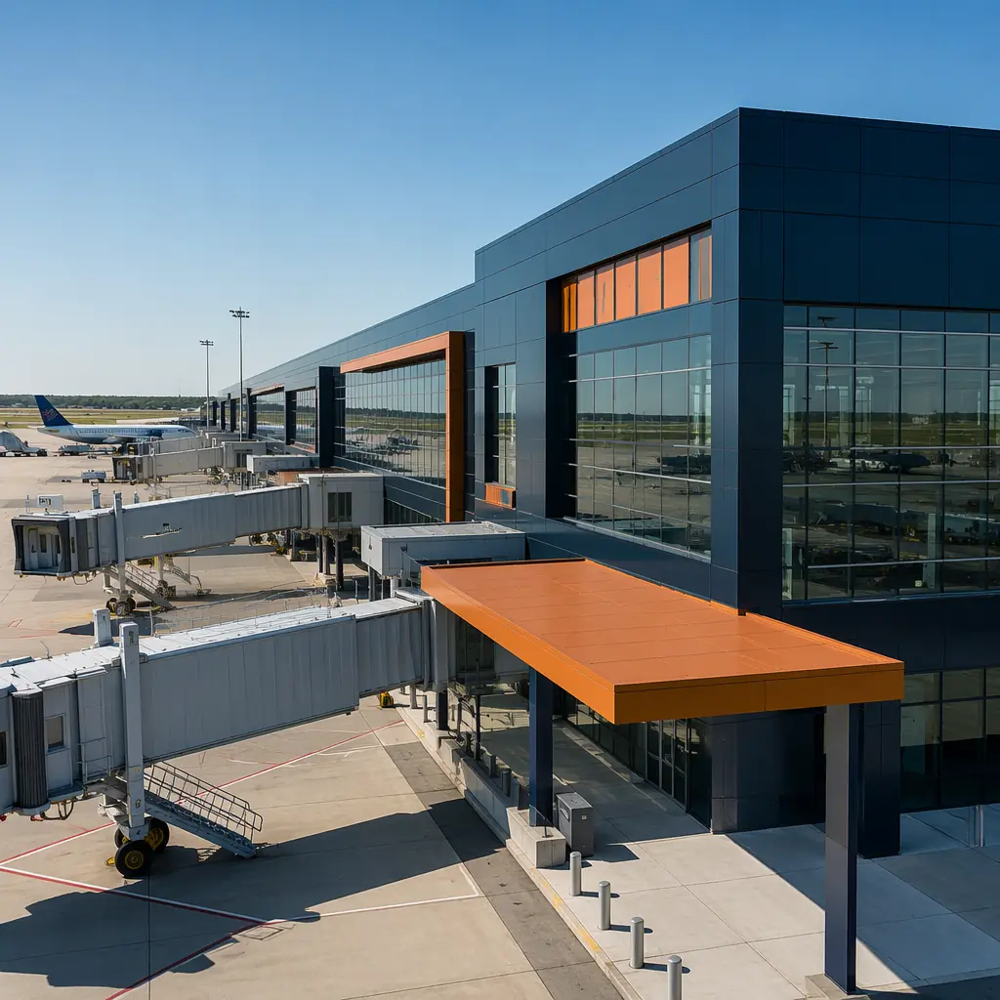
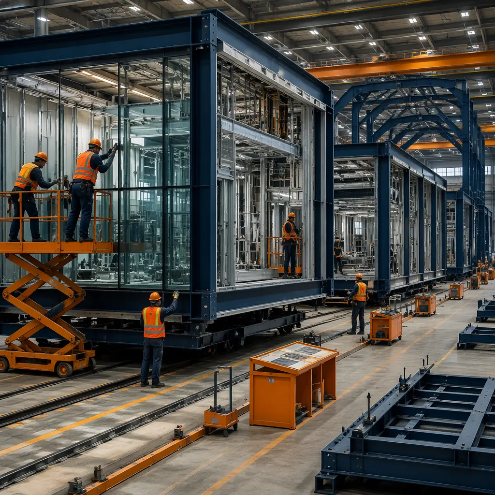
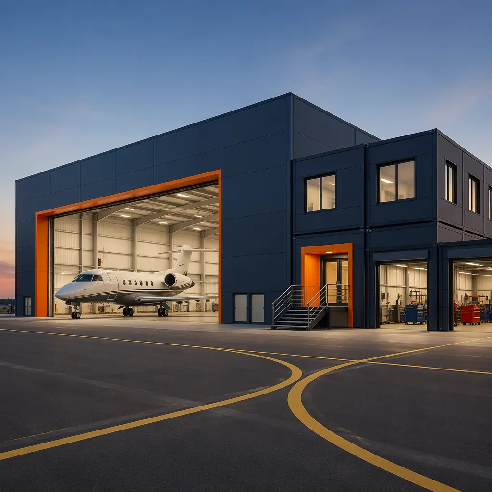
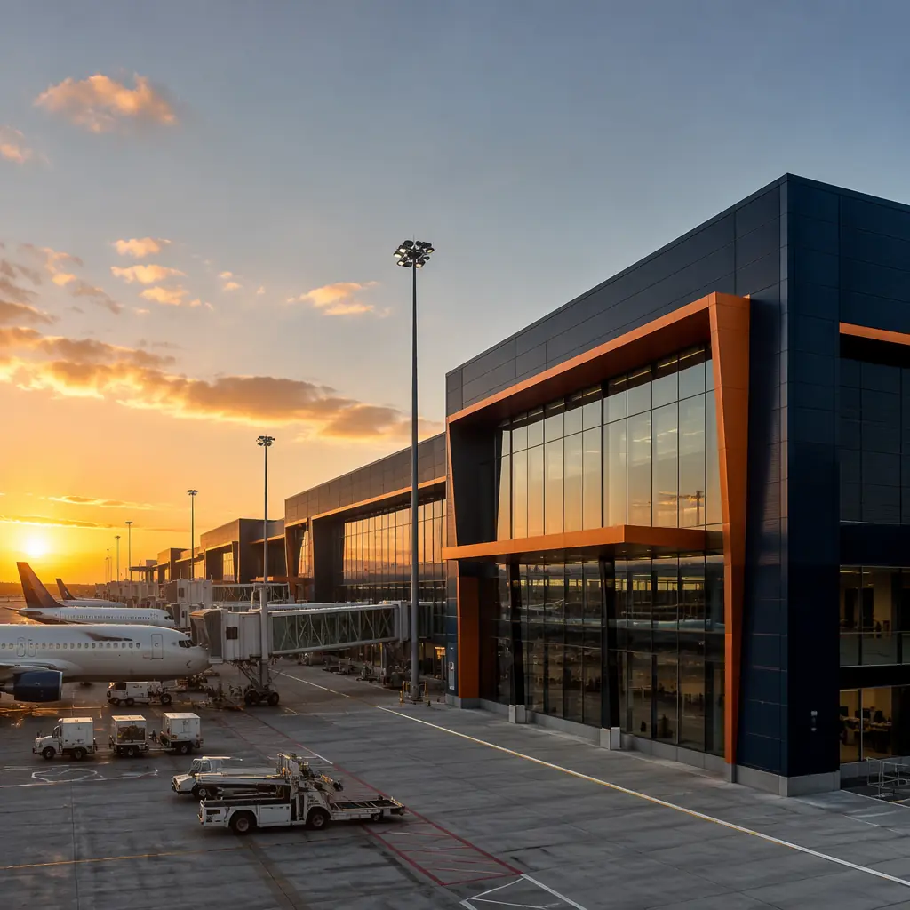

Airport construction operates under constraints that make every other construction sector look straightforward by comparison. Every worker, every material delivery, and every piece of equipment entering the airside operations area must pass through security screening. Work adjacent to active taxiways requires air traffic control coordination and may only proceed during designated possession windows — typically 2–4 hours overnight between the last arrival and the first departure. Noise restrictions limit construction hours. Foreign object debris (FOD) control means every screw, every piece of packaging, and every construction offcut must be accounted for before aircraft operations resume. The result is that construction at an active airport costs 30–50% more than an equivalent building outside the fence, and takes 40–60% longer. Modular construction addresses these constraints by shifting 80–90% of the construction work off-site — to a factory where there are no security escorts, no possession windows, no FOD sweeps, and no noise curfews. The completed modules arrive on flatbed trucks and are craned into position during a single overnight window.

The Airport Construction Dilemma — Expanding Without Disrupting Operations
The fundamental challenge of airport construction is that the airport must continue operating at full capacity throughout the project. You cannot close a runway for six months to build a terminal wing. You cannot shut down the baggage handling system to tie in an expansion. You cannot block a taxiway to erect structural steel. Every construction activity must be planned around the operational schedule of an organization that runs 18–20 hours per day, 365 days per year.
Traditional construction at airports absorbs this constraint through a series of compounding cost multipliers. Security badging and escorting for construction workers adds $3–$5 per worker-hour in administrative overhead and productivity loss. Material deliveries require 24–48 hours of advance coordination with airport operations and security, and every delivery vehicle is subject to inspection at the perimeter gate. Tool and equipment inventories must be reconciled at the start and end of every shift to account for every item that could become FOD. Work that would take one day on a commercial construction site takes two to three days at an airport — not because the work is harder, but because the access constraints fragment the available working time into short, unpredictable windows.
For airport authorities and aviation facility managers who are accountable for both operational continuity and capital project delivery, this trade-off is existential. Every day of construction disruption is a day of operational risk — a taxiway incursion, a security breach, a FOD incident that damages an aircraft engine. Modular construction eliminates most of this risk by moving the construction out of the operational environment. The modules are built inside a factory, where the nearest aircraft is 3,000 km away. The airport site work is limited to foundation preparation, utility connections, and module setting — activities that can be sequenced into the overnight possession windows with minimal operational impact.

Terminal Expansion — Adding Gates Without Shutting Down
Regional airport terminal expansions are the most compelling application for modular construction in the aviation sector. A regional airport adding two to four new gates typically needs 15,000–30,000 sq ft of additional terminal space: hold rooms, passenger boarding bridges, retail and food and beverage concession spaces, restrooms, and back-of-house support areas including baggage make-up and airline operations offices. In traditional construction, this expansion would require 14–18 months of airside construction activity — 14–18 months of security escorts, FOD sweeps, and taxiway closures for crane operations.
Modular terminal expansion delivers the same 15,000–30,000 sq ft in 6–9 months total, of which only 4–6 weeks involve airside construction activity. The terminal modules — typically 14–16 ft wide by 60–70 ft long to accommodate the hold room depth — are assembled in the factory with structural steel frame, exterior envelope (curtain wall glazing, metal panel, or precast concrete), MEP rough-in, and interior finishes to drywall stage. The modules arrive on site with the passenger boarding bridge structural connection points pre-engineered into the module frame, allowing the PBB to be installed immediately after module setting rather than waiting for field-constructed structural supports.
The operational implications for the airport are significant. A traditional terminal expansion ties up one to two aircraft parking positions for 14–18 months — either losing gate capacity or forcing the airport to operate remote stands with busing, which degrades the passenger experience. A modular expansion ties up those positions for 4–6 weeks. For a regional airport operating at 85% gate utilization during peak hours, the difference between losing two gates for four weeks versus 16 months is not marginal; it is the difference between maintaining schedule integrity and forcing airlines to delay or cancel flights.
Aircraft Hangars — From T-Hangars to MRO Facilities
Aircraft hangars present a structural challenge that is well-suited to modular steel-frame construction: large clear-span interior volumes with no intermediate columns. A T-hangar for general aviation aircraft requires a clear door opening of 40–45 ft wide by 12–14 ft high, with an interior depth of 30–35 ft. A corporate hangar for a Gulfstream G650 or Bombardier Global 7500 requires a clear span of 90–110 ft with a tail height clearance of 28–30 ft. An MRO (maintenance, repair, and overhaul) hangar for narrow-body commercial aircraft like the Boeing 737 or Airbus A320 requires a clear span of 150–200 ft with a tail height of 45–50 ft and a depth of 120–150 ft to accommodate the aircraft fuselage with maintenance access on all sides.
| Hangar Type | Clear Span | Door Height | Modular Approach | Build Time (modular) |
|---|---|---|---|---|
| T-Hangar (nested, 4–12 units) | 40–45 ft per unit | 12–14 ft | Bolted steel frame modules, pre-engineered trusses | 8–12 weeks |
| Corporate Hangar | 90–110 ft | 28–30 ft | Modular steel frame with site-assembled clear-span trusses | 12–16 weeks |
| MRO Hangar (narrow-body) | 150–200 ft | 45–50 ft | Modular structural steel bays with site-spliced long-span trusses | 16–24 weeks |
For hangars, modular construction’s advantage is not in the clear-span structure itself — which must be assembled on site due to transport width limitations on trusses exceeding 14–16 ft — but in the ancillary spaces that hangars require: pilot lounges and flight planning rooms, maintenance workshops with tool cribs and parts storage, administrative offices, crew rest areas, and lavatory and shower facilities. These spaces, which typically account for 20–30% of the hangar’s total square footage, are ideal candidates for factory-built modules. They arrive with finishes, MEP, and fixtures installed, and are connected to the hangar structure after the clear-span steel is erected. This approach eliminates 8–12 weeks of sequential interior fit-out work from the critical path — work that, in a traditional hangar project, cannot begin until the roof is weathertight and the slab is cured.

Ground Support & Specialized Aviation Facilities
Beyond terminals and hangars, airports require a dense network of specialized support facilities that are operationally critical but architecturally straightforward — making them strong candidates for modular delivery. Ground service equipment (GSE) storage and maintenance buildings house the tugs, belt loaders, ground power units, and de-icing equipment that keep aircraft operations running. These buildings require large clear-span interiors with high-bay doors, durable finishes resistant to fuel and de-icing fluid exposure, and ventilation systems capable of exhausting diesel and gasoline engine emissions during equipment startups. Structurally, GSE buildings share the same requirements as modular industrial warehouses — clear-span steel frames, heavy-duty slab-on-grade foundations, and durable exterior envelopes — and benefit from the same factory assembly advantages that make modular warehouse construction 50% faster than traditional site-built methods.
Aircraft rescue and firefighting (ARFF) stations are the highest-stakes support facility on any airport. Regulated under FAA Part 139 in the United States and equivalent ICAO standards internationally, ARFF stations must meet strict response time requirements: the first responding vehicle must reach the midpoint of the farthest runway within three minutes of alarm activation, and the remaining vehicles must arrive within four minutes. This response time requirement dictates the station’s location on the airfield, which in turn dictates that the station must be constructed in the most operationally sensitive area of the airport — adjacent to the runway-taxiway system, where construction disruption carries the highest operational risk.
Modular ARFF stations, delivered as 12–20 factory-built modules comprising apparatus bays (typically four to six drive-through bays), crew quarters, watch room, kitchen and day room, fitness room, and administrative offices, can be set and commissioned in 8–12 weeks of airside activity compared to 12–18 months for traditional construction. For an airport that must maintain ARFF coverage throughout construction — which is every airport, because FAA Part 139 requires continuous ARFF capability during air carrier operations — the modular approach eliminates the need for a temporary ARFF facility and the associated operational compromises that degrade response capability. Our modular fire safety guide covers the fire-rated assembly certification that applies equally to ARFF stations and other mission-critical facilities.
Regulatory Compliance — FAA, TSA & ICAO Requirements
Aviation facilities operate under a regulatory framework that has no equivalent in commercial construction. Three principal regulatory bodies govern airport construction in the United States and internationally, and each imposes requirements that affect building design, construction methods, and documentation.
FAA Part 139 (Airport Certification). Part 139 governs the safety standards for airports serving scheduled air carrier operations. Construction activities within the runway safety area (RSA), taxiway safety area (TSA), and obstacle free zone (OFZ) require an FAA-approved construction safety and phasing plan (CSPP) that demonstrates how the airport will maintain operational safety during construction. Modular construction simplifies the CSPP by reducing the duration and footprint of airside construction activities to foundation work and module setting, with the CSPP focusing on crane placement relative to approach surfaces and temporary taxiway closures for module delivery.
TSA Security Requirements. Any construction that penetrates the airport security perimeter — the boundary between the sterile area and the landside public area — triggers TSA security plan requirements under 49 CFR Part 1542. Construction access points must be secured, workers must be badged or escorted, and materials and equipment entering the sterile area must be screened or inspected. Modular construction addresses these requirements through factory completion: modules arriving on site have already been assembled, MEP-roughed, and inspected in a secure factory environment. The modules themselves are sealed for transport and are not opened until set in position, eliminating the need for continuous security monitoring of a construction site.
ICAO Annex 14 (Aerodromes). For international airport projects, ICAO Annex 14 governs aerodrome design and operations, including obstacle limitation surfaces, runway strip dimensions, and rescue and firefighting category requirements. Modular buildings must be designed to comply with the same obstacle limitation surfaces as traditional buildings — the advantage is that the factory engineering process can verify compliance before the module is built, using 3D modeling to confirm that the completed building height at its designated location does not penetrate any approach, transitional, or horizontal surface.
For aviation projects with government funding or oversight, the modular government buildings guide provides additional context on public procurement pathways and compliance documentation requirements that apply to airport projects.
Cost & Timeline — Airport Modular vs Traditional Construction
The cost premium for traditional airport construction — the 30–50% uplift over equivalent off-airport construction — is driven primarily by four factors: security compliance overhead, access constraint productivity losses, FOD control requirements, and the extended project duration that compounds general conditions costs (site supervision, temporary facilities, insurance). Modular construction attacks all four of these cost drivers simultaneously.
| Project Metric | Modular Airport Construction | Traditional Airport Construction | Delta |
|---|---|---|---|
| Total project duration (terminal wing, 20K sq ft) | 6–9 months | 14–18 months | 40–50% faster |
| Airside construction duration | 4–6 weeks | 14–18 months | 80–90% reduction |
| Cost premium vs off-airport equivalent | 10–15% | 30–50% | 20–35% cost savings |
| FOD incidents (risk exposure) | Minimal (4–6 weeks of airside work) | Moderate to high (14–18 months) | Order-of-magnitude risk reduction |
| Gate outage duration | 2–4 weeks per gate group | 8–14 months per gate group | Gate revenue protected |
The financial value of reduced airside disruption is the hardest number to quantify and the most important one to capture. Lost gate revenue during construction, airline schedule disruption costs, and passenger experience degradation do not appear on the construction budget line items — but they appear on the airport director’s performance review and the airline station managers’ quarterly reports. Modular construction’s 80–90% reduction in airside disruption duration is therefore not just a construction efficiency metric; it is an operational risk management strategy. For ROI analysis methodology that captures these operational externalities, developers and airport authorities should include gate outage costs, airline compensation, and passenger throughput impact in the total project cost comparison — not just the general contractor’s bid.
The value proposition of modular construction at airports is not that it builds a cheaper terminal or hangar. It is that it builds the same terminal or hangar with 80% less operational disruption, in 40% less time, with an order-of-magnitude reduction in the FOD, security, and safety incidents that keep airport directors awake at night. The construction cost saving is secondary. The operational risk reduction is primary.
